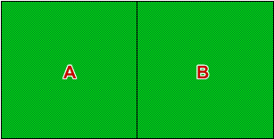

Crop experiment with varieties A and B in field

Use the first design to explain that because we have no information about unexplained variability, we cannot assess whether the observed difference in yields may be a chance occurrence.
Use the second design to show that, even after the experiment has been completed, collecting information from smaller areas in the field gives replicates and this gives a measure of unexplained variation against which we can assess the difference between the two varieties.
Note that the second design is also poor . A left-to-right fertility gradient could give the same results, even if the varieties are equivalent. Randomisation of the treatments before the experiment is conducted decreases the risk of this.